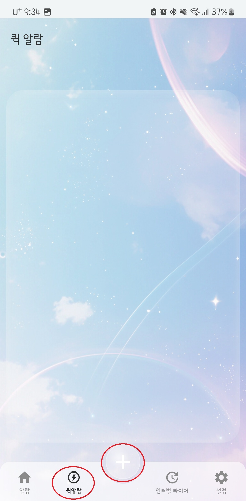

Using Quick Alarms
Quick alarms are useful when you want to set an alarm for a short time later.
You can create an alarm quickly with just a few taps, without going through detailed settings.
How to Use
On the main screen, tap the + button at the bottom to quickly add a quick alarm.

- In the quick alarm window, set the desired time and simple options.
- Tap the check button to create the alarm immediately.
Useful For
- Taking a short nap
- Timing a short break
- Setting a quick reminder
Please Note
Quick alarms are designed for fast setup.
If you need more detailed settings, please use the general alarm feature as well.